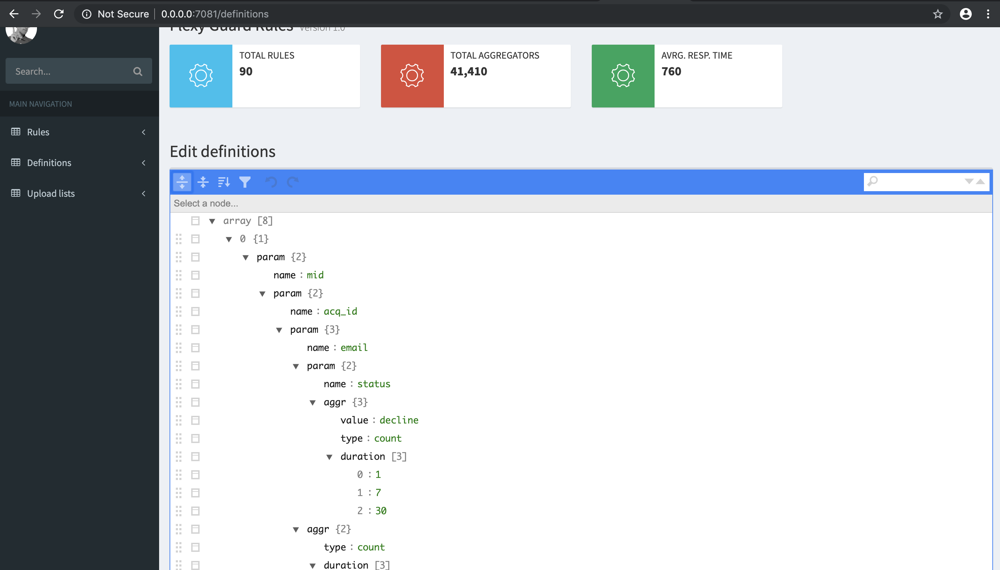
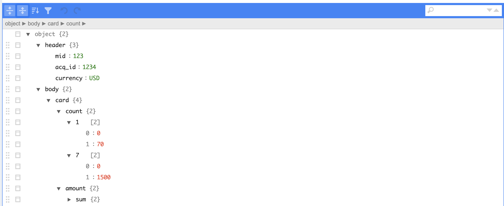
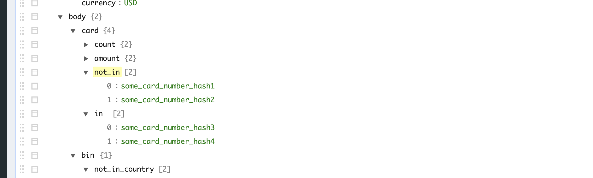
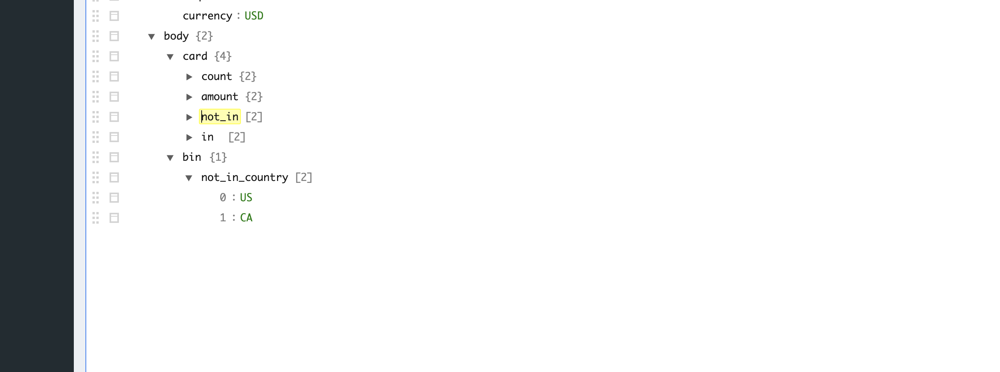
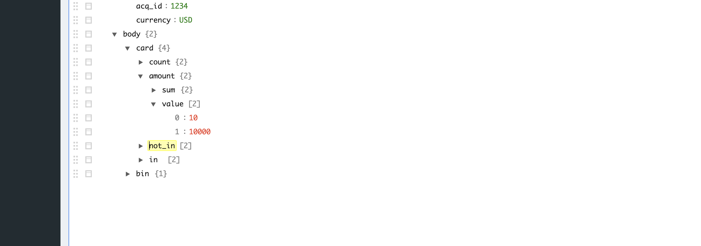
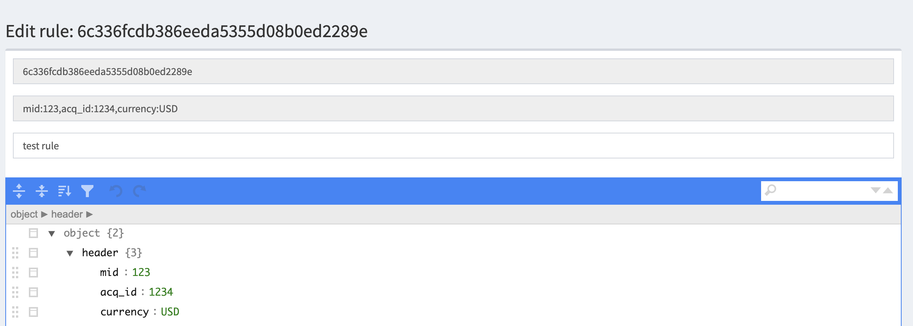

Fraud detection and prevention
Fraud basic setup and specification
Fraud prevention and traffic filtering service (FlexyGuard) is a dedicated web-service which pre-processes all payment requests. The Guard system analyses payment request snapshot and applies set of filters to return a scoring remark back to Public API.
Every payment request is re-routed to FlexyGuard in the first place
Monitoring and filter alerts
The Guard system assigns a check result and a score to every payment request and sends the result back to the caller. Filtered payment requests could be monitored via Analytics/Reporting interface on a dedicated dashboard.
Appropriate alerting mechanism could be set for scoring aggregated number or payment decline reason or any day-to-day fraud monitoring process requirements in Analytics/Reporting system
Basic traffic filtering rules syntax
Any filtering rule contains of two parts: a header and a body, where the header contains keys and values from payment request which trigger the rule once all the key/value pairs match the ones from the payment request.
For example:
"header" : {
"mid": "some_merchant_id",
"currency": "USD"
},
"body": {
"amount": {
"value":[1000, 10000]
}
}
//The code above indicates that every time we have payment
//with mid and currency set to "some_merchant_id" and "USD" accordingly
//the following rule body will be applied:
//check if amount parameter value of payment request is between 1 and 100 USD
Default payment parameters are (could be modified in definitions section of FelxyGuard admin console):
data - additional data that could be sent in “extra_return_param” field on public API
amount - tx amount in cents (100 cents = 1 USD)
gateway_amount - amount in cents accepted by the acquirer (usually converted from tx amount, 100 cents = 1 USD)
userid - lead_id field from Payments object (table)
email - payer’s email provided on the payment form or via Public API
tid - payment unique token assigned by the system
acq_id - type of gateway which has been used to facilitate this payment
status - payment status (Pending, Approved, Declined)
ip - referral IP address
currency - currency code (USD, EUR, PLN, CNY, etc)
gateway_currency - currency code accepted by the acquirer (USD, EUR, PLN, CNY, etc)
card - PAN token attribute of Payment object (table)
bin - BIN number attribute of Payment object (Bank identification number, first 6 digits of PAN)
order - an order number assigned by a merchant
type - Payment type (PayIn, Payout)
product - product description assigned by a merchant
company_id - merchant company name
mcc - merchant category code, assigned to a merchant account by the settings services
Aggregating parameter values
To implement filtering by a parameter aggregated value (periodic-wise) we have to define which parameters should be aggregated along with its dependencies from the other parameters
Example: we need to filter payments according to the accumulated 7 days turnover from a single card
To do so we need to add definition to FlexyCard and instruct it to start accumulating “amount” parameter values from a unique “card” parameter value and drop this value every 7 days for each card parameter value.
Also we want to do so for each unique mid, acq_id and currency parameters, in this case definition must be as following:
[
{
//defining a new parameter to perform aggregation, "mid" wil be the first unique parameter
"param": {
"name": "mid",
//defining next unique nested parameter "acq_id"
"param": {
"name": "acq_id",
//another nested unique parameter "currency"
"param": {
"name" : "currency",
//defining card unique nested param
"param": {
"name": "card",
//aggregating amount and setting drop value period to 7 days
"param": {
"name": amount,
"aggr": {
"type": "sum",
"duration": [7]
}
}
}
}
}
}
}
]
The following definitions for aggregates are already predefined in the system and could be changed on FlexyGaurd admin console:
“mid>acq_id>email>count 1, 7, 30 days” - counts payment within mid, acq_id and single email “mid>ip>count 1, 7, 30 days” - counts payment from a single ip address within unique mid parameter
etc
‘Full list of definitions could be checked on FlexyGuard admin console Definitions>Aggr section from the left menu, please note that definition are rarely to be modified only in the case of changing the rule (adding new param to the payment entity) schema or aggregation logic’
FlexyGuard admin console (WEB UI)
Adding a new rule
To add a new rule please navigate to Add Rule page bu clicking FlexyGuard log at the upper left corner

FlexyGuard keywords (count, not_in, not_in_country, not_in_ip_country, value)
count - sets a range in which param presence in the payment request count must be checked
sets the range for payment count withing one card parameter within 1 and 7 days
not_in/in - checks that parameter value is not in or in the list
sets a list of card parameter and checks if card value not in the list
not_in_country - checks if specific parameter value not in the country list associated with this parameter
in_country - checks if specific parameter value is in the country list associated with this parameter
checks if bin parameter value is not in the list
value - checks if parameter value is withing the range
Uploading the lists for IP countries and BIN countries parameters

To update the parameter (bin, ip) country lists please navigate to the page above
Uploaded files should be a formatted CSV with headers at the first row
BIN countries file format example:
bin;ps;bank_name;type;sub_type;country;ccode_short;ccode_iso;code;www 021502;PRIVATE LABEL;;DEBIT;;UNITED STATES;US;USA;840;;
IP address country file example:
IP1;IP2;IP1_int;IP2_int;code_short;code_iso;code_number;country_name 1.0.0.0;1.0.0.255;16777216;16777471;AU;AUS;036;AUSTRALIA
Searching/Modifying the rules
To search the rule please enter any text on the Search text box

To modify the rule just follow the link under rule hash value
Rule naming and hashing
When you save a rule the system automatically creates a hash value and descriptor based on header parameters
Please add comment which will be added to the search index along with hash and descriptor, please mind that proper naming in the comment field will help to easily navigate the rule lists in the future, for example
Bank Of China
Bank Of China: High risk
Bank Of China: High risk: China Airlines
The first rule has only acq_id parameter at the header and defines the global rule for this bank_name The second one is for high risk merchant categories, like mcc parameter and acq_id posted on the header The last one for a specific merchant and has acq_id, mcc, mid parameters in the header
‘The headers are unique within the systems, you can’t create two rules with the same header value’